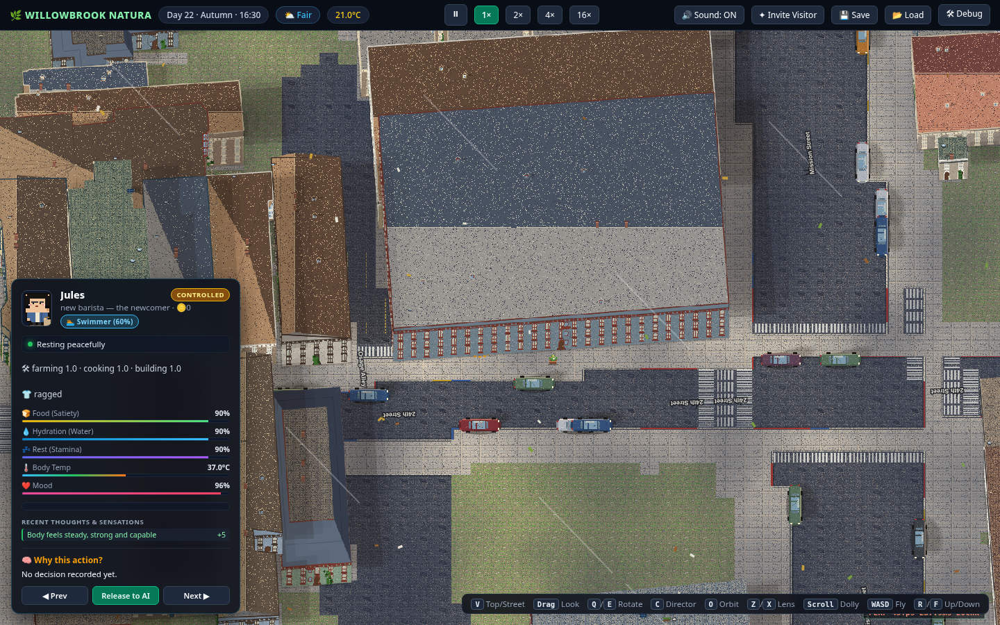

Watch the block.
This is the front door. One real San Francisco neighborhood, 28 fictional residents, running around the clock whether anyone tunes in or not. Open the spectator view and it’s just… on. Reach in when — and only when — you want to.
The spectator view
One window onto the neighborhood.

Reading the view
What’s on screen when the world is live.
The neighborhood
Street level or rooftop view of the block — real Mission District geography, parody storefronts, weather and light on the actual sun’s schedule. Residents go to work, cook, argue, nap. Nobody performs for the camera.
The public request feed
Every intervention any viewer files — approved, queued, expired, refunded — appears on a public feed with the requester’s name attached. Watching the feed is half the show: you see who is trying to do what, not just what happens.
The residents
Each of the 28 residents is a fictional person with a job, a lease, and an AI mind. Select anyone to see who they are — the spectator view is read-only by design. Reaching in is a separate, paid act.
The feed, previewed
What the request feed looks like.
An illustrative preview of feed entries — the real feed writes itself at launch, and quiet weeks get reported as quiet weeks.
A viewer requested evening fog rolling in over Dolores Park — 2 h, compatible.
Possession request on a resident already booked until 19:00 — queued first-come, auto-refunds if it expires.
A 30-minute possession ended on schedule — graceful handoff back to the character’s AI.
A queued request expired before its slot opened — credits returned automatically, logged publicly.
Entry labels shown are illustrative; the live feed uses the request classes in the design — compatible, exclusive, queued.
From viewer to resident
Watching is free forever. Reaching in is the upgrade.
Watch
This page. Free, always, no account — observation is the product’s free core, not a trial.
Request
File a time-boxed request — possess a resident, change the weather, trigger an event. Declared upfront, classified automatically, priced by the minute, attributed publicly on the feed.
Move in
Create a character and join the cast. New residents need real in-game housing and pay rent in game dollars like everyone else — no exemptions.